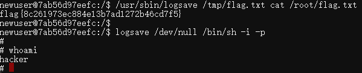

# logsave
原理:logsave 的本职工作是将管道或命令的输出追加到一个日志文件中，但它会以 root 身份打开文件并写入。如果文件不存在，它会创建；如果文件存在，默认是追加（-a 模式）还是覆盖取决于参数。通过控制它的输出内容，我们可以覆盖 /etc/passwd 或 /etc/sudoers 来获取 root 权限。
SUID位，任何用户在执行这个文件时，程序都会以文件所有者的权限运行，而不是执行者自己的权限。
查找设置了SUID位的文件。
find / -perm -4000 -print 2>/dev/null
logsave /dev/null /bin/sh -i -p我们也可以直接用logsave来读取文件，如果logsave有覆盖选项，我们可以读取文件
/usr/sbin/logsave /etc/passwd cat /tmp/evil这个可以将/tmp/evil替换/etc/passwd 也可以反过来写，直接读取/etc/passwd的内容
这个命令结合了三个关键元素：logsave/bin/sh -i -p 和 /dev/null。

# 1. 提权核心：/bin/sh -i -p
- /bin/sh -i -p: 这是获取高权限 Shell 的核心机制。
- -p (privileged) ：如前所述，这个选项用于禁用 Shell 的自动降权机制，确保如果 Shell 是以 root 权限启动的，它会保持这个 root 权限。
- -i (interactive) ：确保启动的 Shell 是交互式的，即用户可以在其中输入命令并获得即时响应，而不是一个只能执行一次的脚本。
- 提权前提： 要使这个命令生效，logsave 程序必须被错误地设置了 SUID (Set User ID) 权限，且所有者是 root。
# 2. 利用载体：logsave 命令
- logsave 的作用： logsave 命令通常用于将一个程序的输出和状态信息保存到日志文件中。它的标准用法是 logsave [logfile] [command]。它会执行指定的命令，并将该命令的所有输出（包括标准输出和标准错误）复制到日志文件中。
- 滥用原理： 由于 logsave 的最后一个参数是它要执行的命令，如果 logsave 自身以 SUID root 权限运行，那么它调用的 /bin/sh -i -p 也会继承 root 权限。
# 3. I/O 处理：/dev/null
- /dev/null: 这是 Linux 中的一个特殊文件，也被称为空设备。写入其中的所有数据都会被丢弃，但命令会报告写入成功。
- 作用： 在这个命令中，/dev/null 被用作 logsave 的日志文件参数。
- logsave /dev/null ... 告诉 logsave 把所有日志输出到 /dev/null。
- 意图： 这是为了避免在文件系统上留下提权操作的日志文件，提高隐蔽性。
# timeout
timeout 是一个 命令行工具，用于给另一个命令的执行时间加上限制。它的主要作用是：如果被执行的命令运行时间超过了预设值，timeout 会强制终止它。
timeout 7d /bin/sh -p7d(7天) 是超时时间，设置得足够长，保证你有充足的时间操作。-p参数用于保留 SUID 权限，是成功提权的关键。在某些旧版系统上（如 Debian Stretch 及更早版本），可能需要省略 -p
# mawk
在 Linux 系统中，mawk（Mike's AWK）是 gawk（GNU AWK）之外另一种非常快速、轻量级的 AWK 实现，常见于 Debian/Ubuntu 等发行版。